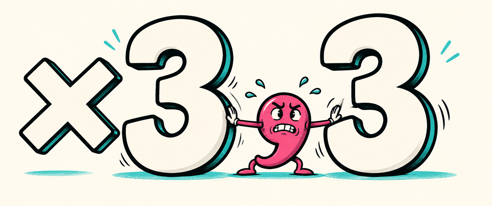

<section id="meme-comma" style="background:#000">
<h2 class="t nok">САМАЯ ВАЖНАЯ ЗАПЯТАЯ</h2>

<p class="meme-caption">Без меня доклад станет зрелищнее. <span class="hash">И неправильнее</span></p>
<aside>Запятую бережём. [пауза 2 с]<br>Теперь разберёмся, какое железо досталось этим алгоритмам.<br>[→ следующий слайд]<br><br>──────────<br>Источники и условия<br>Оригинальная иллюстрация ImageGen, V6; assets/src/img/memes_v6_late_prompts.txt. Мем №54. ×3,3 относится к серии x33: iPhone 14 Pro, utility, N=2^20. Значение ×33 не является результатом измерений.<br></aside>
</section>
